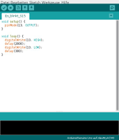
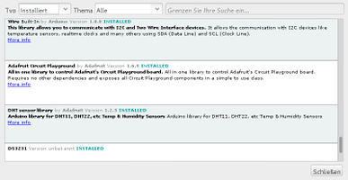
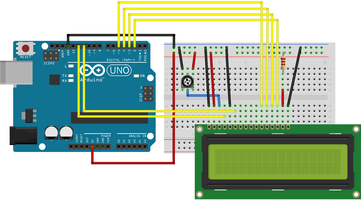

Arduino
Dieser Artikel wurde für die folgenden Ubuntu-Versionen getestet:
Ubuntu 16.04 Xenial Xerus
Ubuntu 14.04 Trusty Tahr
Zum Verständnis dieses Artikels sind folgende Seiten hilfreich:
Arduino / Genuino  ist eine Physical-Computing-Plattform, also ein Verbund von Mikrocontroller (Board genannt) und dazugehöriger Software, die beide quelloffen sind. Das heißt, man kann sich die Pläne für die Minicomputer herunterladen und diese selbst herstellen. Programmiert wird in C/C++ und die Entwicklungsumgebung ist sehr einfach gehalten und somit für Einsteiger hervorragend geeignet, auch dank vieler integrierter Bibliotheken und Beispiele. Den Aufbau der elektronischen Schaltungen kann man mittels Fritzing erstellen.
ist eine Physical-Computing-Plattform, also ein Verbund von Mikrocontroller (Board genannt) und dazugehöriger Software, die beide quelloffen sind. Das heißt, man kann sich die Pläne für die Minicomputer herunterladen und diese selbst herstellen. Programmiert wird in C/C++ und die Entwicklungsumgebung ist sehr einfach gehalten und somit für Einsteiger hervorragend geeignet, auch dank vieler integrierter Bibliotheken und Beispiele. Den Aufbau der elektronischen Schaltungen kann man mittels Fritzing erstellen.
Neben den Boards von Arduino werden offiziell Intel Edison, Intel Galileo Gen 2 und Samsung ARTIK unterstützt. Eine Liste weiterer inoffizieller Hersteller eröffnet ungeahnte Möglichkeiten.
|  |  |
| Arduino-IDE (1.8.5) | Bibliotheksverwalter |
Installation¶
Voraussetzung ist ein installiertes Java. Die deutschsprachige Entwicklungsumgebung (Arduino Integrated Development Environment) ist in den offiziellen Paketquellen enthalten, allerdings in stark veralteten Versionen, selbst in neueren Ubuntus. Möchte man eine aktuelle Version, z.B. weil das eigene Board von der alten Version nicht unterstützt wird, kann man das Programm einfach manuell herunterladen. Entscheidet man sich trotzdem für die Version aus den Paketquellen, muss folgendes Paket installiert [1] werden:
arduino (universe)
 mit apturl
mit apturl
Paketliste zum Kopieren:
sudo apt-get install arduino
sudo aptitude install arduino
Projektseite¶
Von der Download-Seite  lädt man sich die Linux-Version herunter und entpackt [2] diese an den gewünschten Ort. Um das Programm zu starten, führt man das Skript arduino aus [3]. Optional kann man die Datei install.sh ausführen, z.B. im Terminal [4]:
lädt man sich die Linux-Version herunter und entpackt [2] diese an den gewünschten Ort. Um das Programm zu starten, führt man das Skript arduino aus [3]. Optional kann man die Datei install.sh ausführen, z.B. im Terminal [4]:
sh /ENTPACKTER/ORDNER/install.sh
Damit wird ein Programmstarter automatisch angelegt.
Einstellungen¶
Die Einstellungen erreicht man über "Datei → Voreinstellungen". Hier kann unter anderem der Speicherort für die Sketche (Programme), die Editor-Sprache, die Textgröße angepaßt und weitere Adressen für den Bordverwalter hinterlegt werden.
|  |
| 2x16 LCD-Display an einem Arduino UNO |
Konfiguration¶
Bibliotheken¶
Die Entwicklungsumgebung bringt eine Vielzahl von Bibliotheken mit. Je nach verwendeter Hardware kann es jedoch nötig sein weitere Bibliotheken zu installieren. Über "Sketch → Bibliothek einbinden" kann man entweder über "ZIP-Bibliothk hinzufügen" eine passende Library aufspielen oder man sucht via "Bibliotheken verwalten..." nach dieser. Die Dateien werden nach der Auswahl herunter geladen und an die richtige Stelle kopiert. Diese sind unter ~/Arduino/libraries zu finden.
Über "Sketch → Bibliothek einbinden" wählt man die im Sketch zu nutzende Bibliothek aus der Liste. Der passende Code (z.B. #include <LiquidCrystal.h>) wird im Quelltext eingefügt.
Board¶
Wenn das Programm gestartet ist, wählt man zuerst unter "Werkzeuge → Board" das passende Board (zB. "Arduino/Genuino Uno"). aus, bzw. sucht im "Boardverwalter..." nach einem verfügbaren Treiber. Falls der Port nach dem Verbinden des Boards per USB nicht automatisch ausgewählt wurde, wählt man ihn unter "Werkzeuge → Port" aus.
Hinweis:
Bei der Arbeit mit mehreren Boards werden unter Umständen, neben /dev/tty0, weitere Ports angezeigt.
Inoffizielle Boards¶
Um inoffizille Boards/Microcontroller zu ergänzen öffnet man die Einstellungen. Unter "Zusätzliche Boardverwalter-URLs" ergänzt man die Adresse und wählt das Gewünschte anschließend im Boardverwalter aus. Ein entsprechende Liste mit Links ist unter Unofficial list of 3rd party boards support urls zu finden.
Gruppe¶
Wurde das Programm aus den Paketquellen installiert, prüft beim ersten Start der Arduino Permission Checker, ob alle nötigen Berechtigungen vorhanden sind. Im Normalfall bemängelt er, dass der Nutzer nicht in der Gruppe dialout ist [5]. Dies kann per Bestätigung auf "Add" und anschließender Eingabe des Benutzerpassworts nachgeholt werden. Bei der manuellen Installation erscheint erst ein Fehler, wenn man versucht, Code auf das Board zu laden. Per Terminal kann die Eintragung nachgeholt und das Problem somit gelöst werden [4] [6]:
sudo adduser $USER dialout
Programmierung¶
Bevor man mit der Programmierung anfängt sollte auf einem Breadboard die Bauelemente der Schaltung stecken. Der Vorteil ist, dass man Schaltungen immer wieder umbauen und anpassen kann bevor ggf. eine Platine geätzt wird. Einen kleinen Einstieg im Umgang mit diesen Steckbrettern findet man unter Das Laborsteckbrett  .
.
Code¶
In neueren Versionen wird bereits das zweiteilige Grundgerüst des Programms (Sketch genannt) angelegt, welches standardmäßig aus den Teilen setup() und loop() besteht:
1 2 3 4 5 6 7 8 9 | void setup() { // put your setup code here, to run once: } void loop() { // put your main code here, to run repeatedly: } |
Die Beispiele sind durch Kommentare gut beschrieben. Somit kann der Quellcode gut nachvollzogen werden. Im folgenden Beispiel wird ein LCD-Display, welches mit dem Treiber eines Hitachi HD44780 kompatibel ist, angesteuert und Hello World ausgegeben:
HelloWorld.ino
1 2 3 4 5 6 7 8 9 10 11 12 13 14 15 16 17 18 19 20 21 22 23 24 25 26 27 28 29 30 31 32 33 34 35 36 37 38 39 40 41 42 43 44 45 46 47 48 49 50 51 52 53 54 55 56 57 58 59 60 61 62 63 64 | /* LiquidCrystal Library - Hello World Demonstrates the use a 16x2 LCD display. The LiquidCrystal library works with all LCD displays that are compatible with the Hitachi HD44780 driver. There are many of them out there, and you can usually tell them by the 16-pin interface. This sketch prints "Hello World!" to the LCD and shows the time. The circuit: * LCD RS pin to digital pin 12 * LCD Enable pin to digital pin 11 * LCD D4 pin to digital pin 5 * LCD D5 pin to digital pin 4 * LCD D6 pin to digital pin 3 * LCD D7 pin to digital pin 2 * LCD R/W pin to ground * LCD VSS pin to ground * LCD VCC pin to 5V * 10K resistor: * ends to +5V and ground * wiper to LCD VO pin (pin 3) Library originally added 18 Apr 2008 by David A. Mellis library modified 5 Jul 2009 by Limor Fried (http://www.ladyada.net) example added 9 Jul 2009 by Tom Igoe modified 22 Nov 2010 by Tom Igoe modified 7 Nov 2016 by Arturo Guadalupi This example code is in the public domain. http://www.arduino.cc/en/Tutorial/LiquidCrystalHelloWorld */ // include the library code: #include <LiquidCrystal.h> // initialize the library by associating any needed LCD interface pin // with the arduino pin number it is connected to const int rs = 12, en = 11, d4 = 5, d5 = 4, d6 = 3, d7 = 2; LiquidCrystal lcd(rs, en, d4, d5, d6, d7); void setup() { // set up the LCD's number of columns and rows: lcd.begin(16, 2); // Print a message to the LCD. lcd.print("hello, world!"); } void loop() { // set the cursor to column 0, line 1 // (note: line 1 is the second row, since counting begins with 0): lcd.setCursor(0, 1); // print the number of seconds since reset: lcd.print(millis() / 1000); } |
Unter "Datei → Beispiele", sowie in der Linkliste, findet man unzählige Beispiele, die den Einstieg vereinfachen.
Hinweis:
Je nachdem welche Komponenten genutzt werden ist es nötig zusätzliche Bibliotheken einzubinden. Dies geschiebt per #include.
Hochladen¶
Hat man ein Sketch fertiggestellt schließt man den Arduino an den Linux-PC an, kompilert das Sketch und lädt es auf den Minicomputer. Im Programmfenster wird man darüber informiert, wenn der Vorgang abgeschlossen wurde. Probleme werden ebenfalls gemeldet.
Bedienung¶
| Arduino-IDE | |
| Schaltflächen | |
| Überprüfung/Kompilieren des Sketches auf Fehler. Diese werden im unteren Teil des Programmfensters angezeigt. | |
| Das Programm auf das Board hochladen. | |
| Ein neues Sketch erstellen. | |
| Vorhandenes Sketch öffnen. | |
| Das derzeitige Projekt speichern. | |
Es kann hilfreich sein die Ausgabe mit dem Seriellen Monitor ("Werkzeuge → Serieller Monitor") zu überprüfen.
Tastenkürzel¶
| Tastenkürzel | |
| Taste(n) | Beschreibung |
| P | Sketch ausdrucken. |
| S | Sketch speichern. |
| R | Sketch kompilieren bzw. überprüfen. |
| U | Sketch auf den Adruino hochladen. |
| Strg + ⇧ + M | Serieller Monitor |

Links¶
Befehlsreferenz
zur Programmierung von ArduinosArduino Playground
- Plattform zum Austausch von Programmcode, Schaltplänen, Tutorialen, etc.
Fritzing
- Programmcode und SchemataManuals and Curriculum
- Umfangreiche Link-Sammlung zu HandbüchernElegoo
- Treiber, Programmcode und Bibliotheken
- Erstellt mit Inyoka
-
 2004 – 2017 ubuntuusers.de • Einige Rechte vorbehalten
2004 – 2017 ubuntuusers.de • Einige Rechte vorbehalten
Lizenz • Kontakt • Datenschutz • Impressum • Serverstatus -
Serverhousing gespendet von